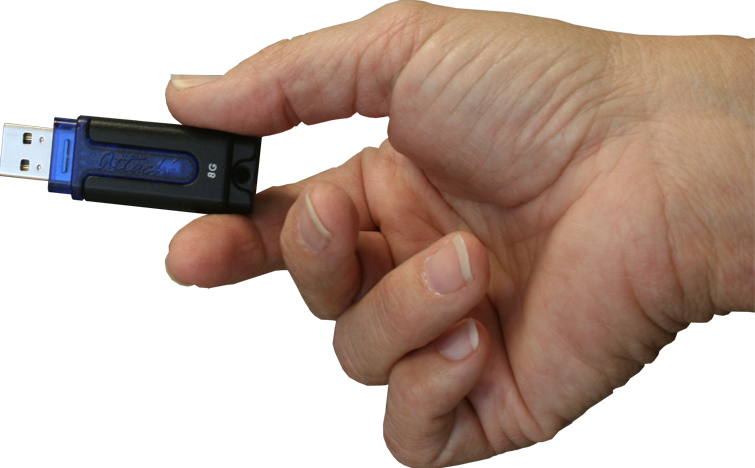

DLOS - Digital Library Operating System
- SAW - Simplified Acces to the Web
- Personal Documents Archive/Organizer
- My$$ - Personal Finance/Budget Tool
- $5 Computer in the palm of your hand

Not everyone is comfortable using computers to find what they need. DLOS gives users with very little, or no experience using browsers a simplified view where they can touch a visual representation of the information they seek. Each DLOS screen provides helpful pointers and encourgament as the user views links to important information on a wide variety of topics.

For example, patrons can touch the DLOS screen to see a local bus or rail schedule, watch a video to learn about community services available to them, apply for healthcare insurance, print tax forms, write local or state officials, safely store personal documents, access email and social media and much more!
Simplified Access to the Web (SAW)
The most compelling feature of SAW is that it allows the library administrator to provide the access points, custom descriptions, and helpful text for each of the DLOS screens. Here are just a few examples of access points that the local library community might identify as useful to various demographics among their patrons:- HOMELESS SUPPORT
- Caring Kitchen
- Homeless Shelter
- Veteran Support
- Clothing&Hygiene
- HEALTH INSURANCE
- Affordable Care Act
- Medicare
- Medicaid
- FINANCIAL ASSISTANCE
- Welfare
- Food Stamps (EBT)
- Homeless Assistance
- AVDA (Aid to Vicitims of Abuse)
- Soup Kitchen
- RECOVERY SUPPORT
- Substance Abuse Hotline
- Divorce Recovery
- Grief Recovery
- JOBS/EMPLOYMENT
- Local Job Listing
- Resume Builder
- Volunteer Opportunities
- HEALTH&FITNESS
- Parks&Recreation
- Find a Doctor
- Find a Hospital
- Find a Health Club
- FAMILY SUPPORT
- Planned Parenthood
- Aftercare
- Summer Camp
- Find a church
- Local Activity Calendar
- TRANSPORTATION
- Train Schedules
- Bus Schedules
- Free Shuttle Services
- DMV

Personal Documents Archive/Organizer
DLOS helps libraries reach out the local community with products that are useful and accesible to even the most timid users. Even those very unlikely to consider using a personal computer can be drawn in by DLOS’ friendly, simple interface. Learning something new in the supportive, stress-free environment of a local library can both be engaging and productive.My$$ - Personal Finance/Budget Tool
How many people actually use budgeting program? Not many.How many people use Facebook? Maybe a billion!
Touch a picture of your daily Frappuchino and it instantly shows you how much you will spend
in a year on it and how that compress to your overall budget.
Put an extra $20 per month towards paying down your credit card balance and it
shows you how many years you cut from budget.
Turn any USB Thumb Drive into a $5 Computer
How many people use FaceBook? Maybe a Billion!
Plug a USB Thumb Drive into a DLOS PC and it instantly becomes your very own personal computer. It remembers your browser cookies and browser history. Your documents and photos become instantly accessible and can be viewed, organized, faxed and printed via an interface that is designed especially for the technically timid.
Information created/gathered and managed by DLOS applications such as My$$ is stored in an area called My Stuff.
that Fits in the Palm of Your Hand
Users can save files and images to the cloud or to their own USB drives that they can purchase for just a few dollars at the reference desk.
